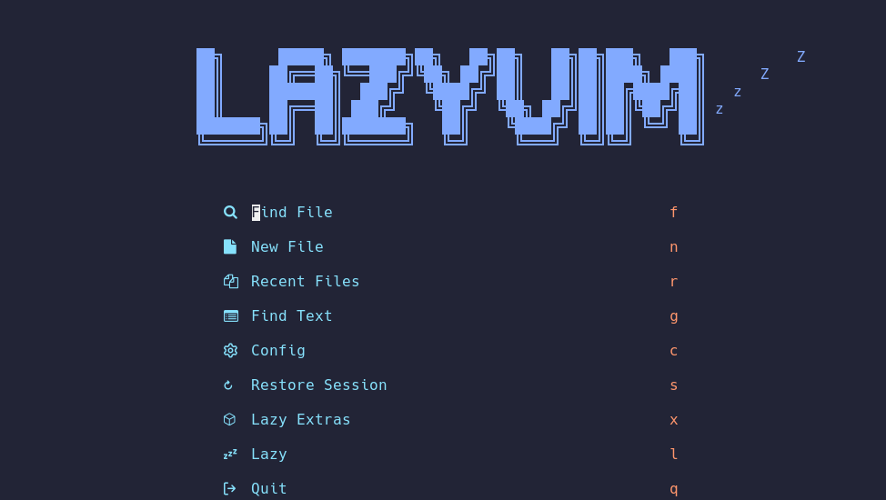

Init my linux server
导言
当我们得到了一个新的服务器账号，常常需要进行一些简单的配置以符合个人的使用习惯，促进后续的工作的开展。但是每得到一个新的账号就进行一次这样的初始化实在太过低效，尤其是很多安装命令需要再次查找甚至需要重新理解，因此，建立这个文档，之后将常用的初始化安装汇集在此。
注：在概念上这里记录的内容和 homebrew、just 等工具中的 "配方" 是相近的，或许后续可以考虑引入类似的工具来自动化安装？
Info
只记录完成某个目的所使用的命令以及一些简单的信息，实践中目的完成顺序并不一定按记录顺序来。
一、安装 Miniconda¶
1. 下载 Miniconda 安装脚本¶
这里下载发布的最新版本
2. 使用脚本安装 Miniconda¶
按照脚本的指示进行安装即可
二、安装无 root 下 apt 能安装的程序¶
这种安装的基本流程是使用 apt download 来下载对应的 .deb 包，然后使用 dpkg -x 来将包安装到指定的位置。这种安装方式需要自己处理依赖，还需要面对一些不安装在默认位置就会出问题的情况。
注：下载得到的 .deb 包版本可能有差异，下面的命令仅供参考。
这样安装需要自己创建 lua 的符号链接
三、安装 johsuto¶
about joshuto
TODO
这里采用 cargo 来进行 joshuto 的安装。
1. 使用 rustup 安装 rust 工具链（包括 cargo）¶
注：访问 官方网页 获得最新的安装命令，下面的命令仅供参考。
2. 使用 cargo 安装 joshuto¶
3. 一些简单的配置¶
参考资料
TODO
四、安装 nvim + lazyvim¶
1. 安装 Nerd Font 字体¶
到 这个网页 中挑选喜欢的字体，然后复制它的压缩包下载链接
wget https://github.com/ryanoasis/nerd-fonts/releases/download/v3.2.1/JetBrainsMono.zip
解压字体文件到合适的位置
可能需要先创建一下这个文件夹
使用 fc-cache 命令安装字体文件
输出中应该包含如下所示的一行：

2. 安装 python3 环境（需要 root)¶
3. 安装 NPM¶
3.1 安装 NVM (Node Version Manager)¶
注：访问 这个仓库 获得最新的安装命令，下面的命令仅供参考。
3.2 使用 NVM 安装合适的 node¶
先检查能安装什么版本
这里安装 v20 的 LTS 版本
4. 安装 Neovim¶
注：访问 官方仓库 获得最新的发布版本，下面的命令仅供参考。
为了使用一些新的特性，这里需要安装最新版本，因此使用 Releases 中的预构建版本。
wget https://github.com/neovim/neovim/releases/download/v0.10.1/nvim-linux64.tar.gz
tar zxf nvim-linux64.tar.gz
把解压文件存放在一个合适的位置，然后在 $PATH 包含的路径中建立一个符号链接来指向 nvim
5. 安装 LazyVim¶
下载 LazyVim/starter 将其做为 nvim 的配置即可，之后打开 nvim 会自动初始化一切
6. 一些简单的配置¶

五、安装 z.lua¶
about z.lua
TODO
该程序使用 lua 编写，需要先安装 lua，如果没有 root 权限也可以参考无 root 安装 lua 一节进行安装。另一方面，该程序是自包含的，因此只需要将 z.lua 文件存放到一个合适的位置并在初始化时指定即可。
在 .bashrc 中配置 z.lua 的初始化命令并开启增强模式和 fzf 支持。个人使用习惯上偏好双字母的命令，因此设置其名称为 zz。其他配置见 这个文档。
export _ZL_MATCH_MODE=1
export _ZL_CMD='zz'
eval "$(lua ~/.local/usr/z.lua --init bash enhanced fzf)"
六、安装 cargo 能安装的程序¶
about ripgrep
about mcfly
about lsd
使用前需要初始化，在 .bashrc 中添加如下命令即可
about bat
about zellij
七、安装 fzf¶
wget https://github.com/junegunn/fzf/releases/download/v0.55.0/fzf-0.55.0-linux_amd64.tar.gz
tar zxf nvim-linux64.tar.gz
mv fzf ~/.local/usr/bin/
八、设置别名¶
alias lgit="lazygit"
alias jo="joshuto"
alias ls='lsd'
alias ll='lsd -alF'
alias la='lsd -A'
alias l='lsd -CF'
九、安装 lazygit¶
先获取最新的版本号，再根据版本号下载发布的最新压缩包，解压后安装即可。
LAZYGIT_VERSION=$(curl -s "https://api.github.com/repos/jesseduffield/lazygit/releases/latest" | grep -Po '"tag_name": "v\K[^"]*')
curl -Lo lazygit.tar.gz "https://github.com/jesseduffield/lazygit/releases/latest/download/lazygit_${LAZYGIT_VERSION}_Linux_x86_64.tar.gz"
tar xf lazygit.tar.gz lazygit
install lazygit ~/.local/usr/bin
参考资料